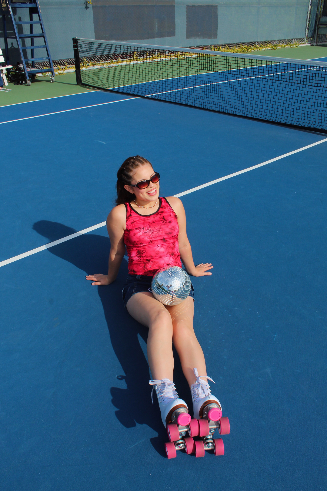

My name is Kassandra Ruiz and I am a first generation, Nicaraguan-American UC Berkeley student. As a Latina, I am passionate about capturing the vibrancy of the world through photography and videography, and sharing it to inspire others to document their life. My work focuses on community, family, and my own travel and experiences.